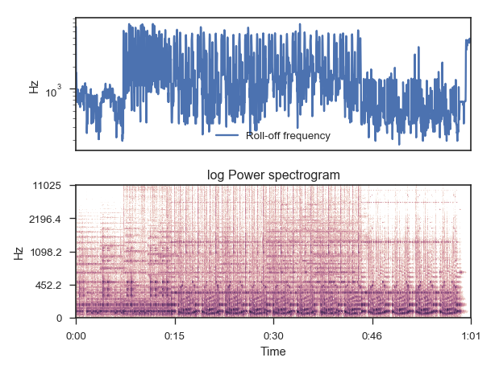

librosa.feature.spectral_rolloff¶
-
librosa.feature.spectral_rolloff(y=None, sr=22050, S=None, n_fft=2048, hop_length=512, freq=None, roll_percent=0.85)[source]¶ Compute roll-off frequency
Parameters: y : np.ndarray [shape=(n,)] or None
audio time series
sr : number > 0 [scalar]
audio sampling rate of y
S : np.ndarray [shape=(d, t)] or None
(optional) spectrogram magnitude
n_fft : int > 0 [scalar]
FFT window size
hop_length : int > 0 [scalar]
hop length for STFT. See
librosa.core.stftfor details.freq : None or np.ndarray [shape=(d,) or shape=(d, t)]
Center frequencies for spectrogram bins. If None, then FFT bin center frequencies are used. Otherwise, it can be a single array of d center frequencies,
Note
freq is assumed to be sorted in increasing order
roll_percent : float [0 < roll_percent < 1]
Roll-off percentage.
Returns: rolloff : np.ndarray [shape=(1, t)]
roll-off frequency for each frame
Examples
From time-series input
>>> y, sr = librosa.load(librosa.util.example_audio_file()) >>> rolloff = librosa.feature.spectral_rolloff(y=y, sr=sr) >>> rolloff array([[ 8376.416, 968.994, ..., 8925.513, 9108.545]])
From spectrogram input
>>> S, phase = librosa.magphase(librosa.stft(y)) >>> librosa.feature.spectral_rolloff(S=S, sr=sr) array([[ 8376.416, 968.994, ..., 8925.513, 9108.545]])
>>> # With a higher roll percentage: >>> y, sr = librosa.load(librosa.util.example_audio_file()) >>> librosa.feature.spectral_rolloff(y=y, sr=sr, roll_percent=0.95) array([[ 10012.939, 3003.882, ..., 10034.473, 10077.539]])
>>> import matplotlib.pyplot as plt >>> plt.figure() >>> plt.subplot(2, 1, 1) >>> plt.semilogy(rolloff.T, label='Roll-off frequency') >>> plt.ylabel('Hz') >>> plt.xticks([]) >>> plt.xlim([0, rolloff.shape[-1]]) >>> plt.legend() >>> plt.subplot(2, 1, 2) >>> librosa.display.specshow(librosa.logamplitude(S**2, ref_power=np.max), ... y_axis='log', x_axis='time') >>> plt.title('log Power spectrogram') >>> plt.tight_layout()
